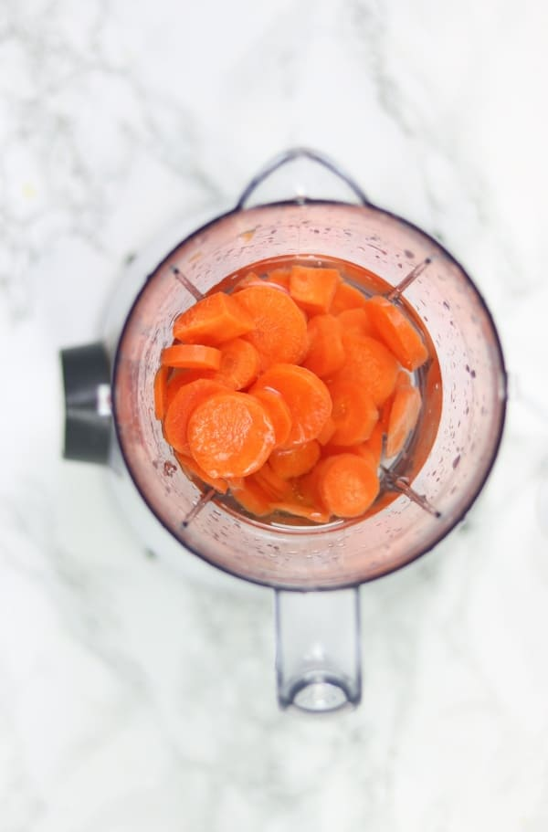
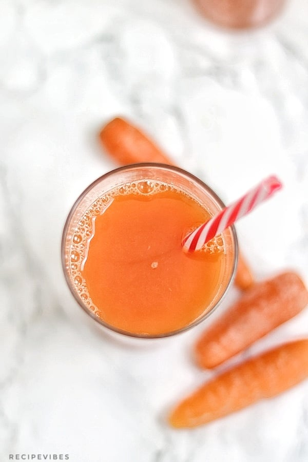

Carrot Juice
Tools
- Blender
- Food processor
- juicer
- knife
INGREDIENTS
How to make Carrot Juice
- Scrape the outer skin or wash the carrots thoroughly to get rid of any dirt.
Cut and add carrots in a blender or food processor then add in water and honey or sugar.

- Blend till smooth then pour through a cheesecloth into a bowl.

- Transfer the juice into a pitcher and chill in the fridge.
Serve and enjoy.
